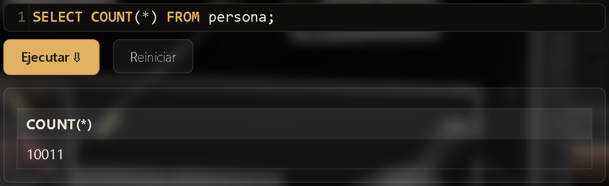

Cómo hacer consultas SQL
Esta base de datos se consulta con SQL, un lenguaje para pedirle información a una base de datos. Acá tenés los comandos básicos que necesitás para investigar el caso, cada uno con un ejemplo y una captura de cómo se ve al ejecutarlo en la consola. Podés copiar cualquiera de estos ejemplos y adaptarlo cambiando el nombre de la tabla o el valor que buscás.
1. Ver todo el contenido de una tabla
Escribí SELECT * FROM seguido del nombre de la tabla. El asterisco (*) significa "todas las columnas". Podés usar el nombre de cualquier tabla del diagrama. Como la tabla persona tiene miles de filas, acá limitamos el resultado a 5 (lo vemos en detalle en el próximo punto).
SELECT * FROM persona LIMIT 5;

2. Limitar cuántos resultados ves
Algunas tablas tienen miles de filas. Agregando LIMIT y un número al final, solo ves esa cantidad de resultados.
SELECT * FROM reporte_escena_crimen LIMIT 3;
3. Buscar por un valor exacto (WHERE)
La cláusula WHERE filtra los resultados según una condición. El texto va entre comillas simples (') y tiene que coincidir exactamente, mayúsculas incluidas.
SELECT * FROM reporte_escena_crimen WHERE ciudad = 'Chicago' LIMIT 4;

4. Combinar varias condiciones (AND)
Si necesitás que se cumplan dos condiciones a la vez, unilas con AND.
SELECT * FROM reporte_escena_crimen WHERE tipo = 'theft' AND ciudad = 'Chicago';

5. Buscar cuando más o menos sabés el nombre (LIKE)
Si no sabés el valor exacto, usá LIKE en vez de =, junto con el símbolo % como comodín. % significa "cualquier cosa (o nada) acá". Por ejemplo, '%Erickson%' encuentra cualquier nombre que contenga "Erickson" en cualquier parte.
SELECT * FROM persona WHERE nombre LIKE '%Erickson%';

6. Ordenar los resultados (ORDER BY)
ORDER BY ordena los resultados según una columna. Agregá DESC para ir de mayor a menor, o ASC (el orden por defecto) para ir de menor a mayor.
SELECT * FROM licencia_conducir ORDER BY edad DESC LIMIT 5;

7. Contar cuántas filas hay (COUNT)
Si solo querés saber cuántos registros hay, sin verlos todos, usá COUNT(*).
SELECT COUNT(*) FROM persona;

8. Cruzar datos de dos tablas (JOIN)
Los datos del caso están repartidos en varias tablas conectadas entre sí (mirá las flechas del diagrama). JOIN te permite combinarlas en una sola consulta, indicando qué columnas las conectan con ON.
SELECT persona.nombre, entrevista.transcripcion FROM persona JOIN entrevista ON persona.id = entrevista.id_persona LIMIT 4;

Con estos comandos alcanza para investigar todo el caso. Volvé a la consola de investigación y probalos.